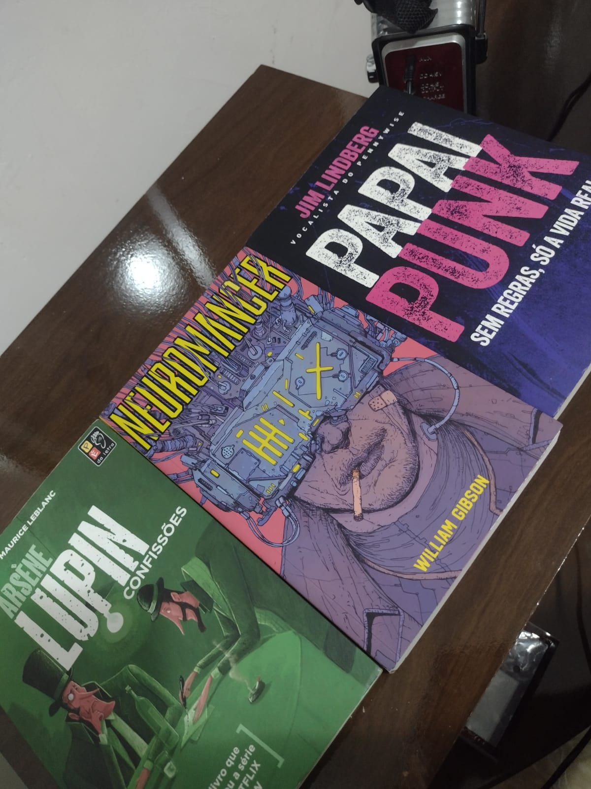

Sobre mim
Atualmente me ocupo com estudos dos assuntos do mercado de tecnologia, especialmete na área da TI (Tecnologia da Informação), sempre que tenho um tempo livre gosto de ler muito, estudar assuntos diverssor, criar projetos como jogos, ferramnetas, apps, interfaces e etc... desafios sempre me encontram, com eles consegui vevenciar na prática problemas de mercado e do cotidiano. Minha filosofia é seguir a exatidão presente na existencia: Ações gerão resultados; Com as açãos corretas chega-se aos resultado desejados.
Especiaalidades

Contrução de paginas Responsivas
Criação de paginas HTML com CSS3 e javascript ou com o uso de framworks como bootstrap ou cms como wordpress, prestashop,entre outras plataformas para desenvolvimento de sites.

Desenvolvimento de Projetos
Desenvolvimento de projestos de metodologias ativas que tornam o desenvolvimento amigável, intuito e ágil.

Programação
Facilidade em programação, estudo contantemente algumas linguagens como java, Pyton,R, Javascript e outraas linguagens que se adaptem a tecnologia que preciso desenvolver.
Minhas Competências Socioemocionais
VEJA AQUI quais todas as competências pela BNCC

Gosto de ser organizado quando se trata de responsabilidades, sou muito focado quando tenho um objetivo a cumprir e não desisto nas primeiras dificuldades.

Me considero uma pessoa de iniciativa e intusismo com novas propostas, quando oferecido um desafio sempre procuro ser mais assertivo possivel.

estou totalmente disposto ao aprendizado, procure ser mais criativo possivel nas minhas tarefas.
alguns dos meus trabalhos - sites


coisas que gosto de fazer!
Edição de videos
Costumo ler no tempo livre
Livros ficcionais, biografias, história, policial e aventura são os que mais me prendem atenção. os LIvros assima sâo: Lupan confissões, Neuromancer e Papai punk, são 3 leituras que recomendo.
Para me contratar
Estes são meus contatos e canais